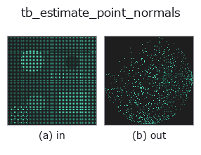

typed op• Datenarten: points → points
• Aufruf: fullseye.apply(img, "tb_estimate_point_normals", a=0.5, b=0.5) (das 2-D-Modell ist ein Bild plus zwei skalare Regler a,b∈[0,1])

*Die Abbildung ist die tatsächliche Ausgabe auf einer synthetischen 128×128-Eingabe. Links Eingabe, rechts Ausgabe. Punktwolken als Draufsicht-Streudiagramm (Helligkeit = z), 1-D-Reihen als Linie, Volumen als Maximum-Projektion entlang z, Videos als mittleres Bild, komplexe Bilder als Betrag; Rückgabewerte, die kein Bild ergeben, werden als Werte gezeigt.*
Regler a durchfahren (0,1 / 0,5 / 0,9, der andere Regler auf Standard):
▸ tb_estimate_point_normals: knob a sweep (docs site)
*Regler b ändert die Ausgabe nicht (gemessen: identisch bei 0,1 / 0,5 / 0,9).*
Stufen (die vorangehenden Ops → dieser Op, von links nach rechts):
▸ tb_estimate_point_normals: stages (docs site)
Auf anderen Bildern (synthetische Szene / Foto / Münzen. Obere Reihe: Eingaben, untere Reihe: deren Ausgaben. Regler auf Standard):
▸ tb_estimate_point_normals: other inputs (docs site)
Punktwolke (N,3) → Einheitsnormalen (der kleinste Eigenvektor der lokalen k-nächste-Nachbarn-Kovarianz = PCA).
> Die ausführliche Beschreibung unten ist der Originaltext — Zusammenfassung und Überschriften sind übersetzt.
FPFH/SHOT/点-面 ICP が要る法線を raw 点群から生成。向きの規約は 2 面:
viewpoint=None(既定)= 重心から外向き(閉じた物体の全周点群向け)/
viewpoint 指定 = 視点(センサ)向き(Hoppe 1992 / PCL 規約。単一視点スキャンの
可視面はセンサ側を向くのが物理的に正しい。pointcloud.estimate_normals と同規約)。
旧版(〜2026-08-30)は viewpoint 指定でも「視点から遠ざける」符号で、単一視点
スキャンという本来用途で全点が裏返っていた。返り値 normals (N,3)。
手順: `cKDTree で各点の k 近傍(自分自身を含む。k > N` なら N に切り詰め)を取り、
その共分散の最小固有ベクトルを法線にする。返り値 `(N,3)` float64 の単位ベクトル。
`viewpoint` は 3 次元の座標(センサ位置)。点数が 3 未満・近傍が同一直線上だと法線は
不定のまま返る(検証は無い)。`k` が小さいとノイズに弱く、大きいと角が丸まる。
後段: `icp_point2plane の dst_normals、render_shaded 用の法線、normals_to_egi`。
`pointcloud.estimate_normals(台帳 estimate_normals`)と同じ規約。
2-D 進化レジストリへ橋渡しした 3d の op `estimate_point_normals。実装は同じで、呼び出し規約だけ op(v, a, b) に合わせてある。a が k(既定 16)を振る。b` は未使用。
• Katalog der Beispieldaten (Download-URLs / Lizenzen) — 2-D nutzt skimage.data (BSD/Public Domain) plus synthetische Bilder, 3-D nennt Download-URLs echter Datenquellen (Stanford, PDS, …).
• Herkunft und Literatur der Operatoren — die Quellen der Forschung/Verfahren, auf denen diese Operatorfamilie beruht.
Das Programm unten ist nachweislich lauffähig (gleiche Eingabe wie die Abbildung). In der Studio-Hilfe wird dieser Block zu Schaltflächen, die es sofort laden und ausführen.
img_to_points 0.50 0.50 tb_estimate_point_normals 0.50 0.50
▸ Load this pipeline · Load & run
Die folgenden Beispiele rufen den zugrunde liegenden Ledger-Op estimate_point_normals auf. Dieser Brücken-Op ist dieselbe Implementierung, angepasst an die Konvention fn(v, a, b); das Verhalten gilt unverändert (nur die Aufrufform unterscheidet sich).
• fpfh_correspondence — py -3.11 examples_3d/fpfh_correspondence.py
points als Eingabe)identity · tb_points_to_voxel · tb_iss_keypoints · tb_angle_3points · tb_project_points · tb_render_point_depth · tb_statistical_outlier_removal · tb_radius_outlier_removal
typed)tb_points_to_voxel · tb_iss_keypoints · tb_angle_3points · tb_project_points · tb_render_point_depth · tb_statistical_outlier_removal · tb_radius_outlier_removal · tb_voxel_grid_downsample
*Provenance: ops.py — 2D Operator-Registry. Diese Notiz wird von tools/opdocs.py md erzeugt (nicht von Hand bearbeiten).*
© 2026 Kazufumi Furuse — Fullseye operator documentation. Licensed under Apache-2.0.
{kind=link}
{kind=link}
{kind=link}